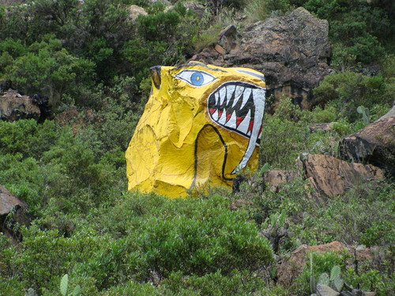
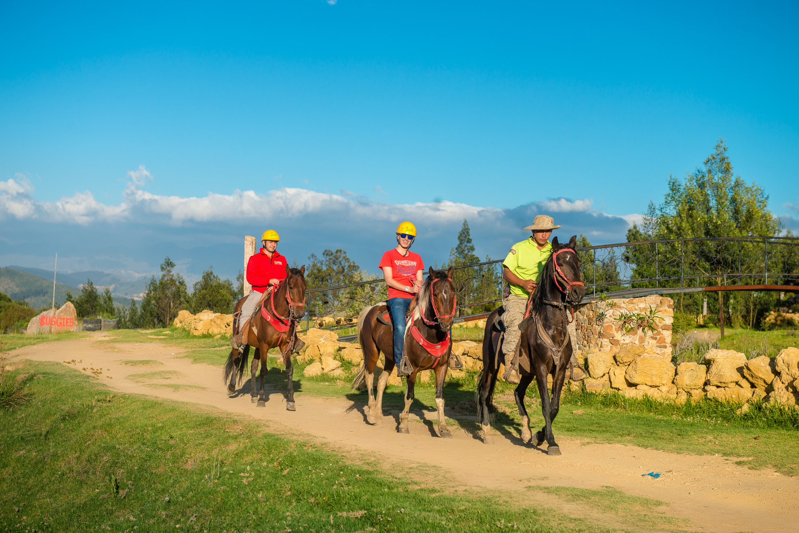
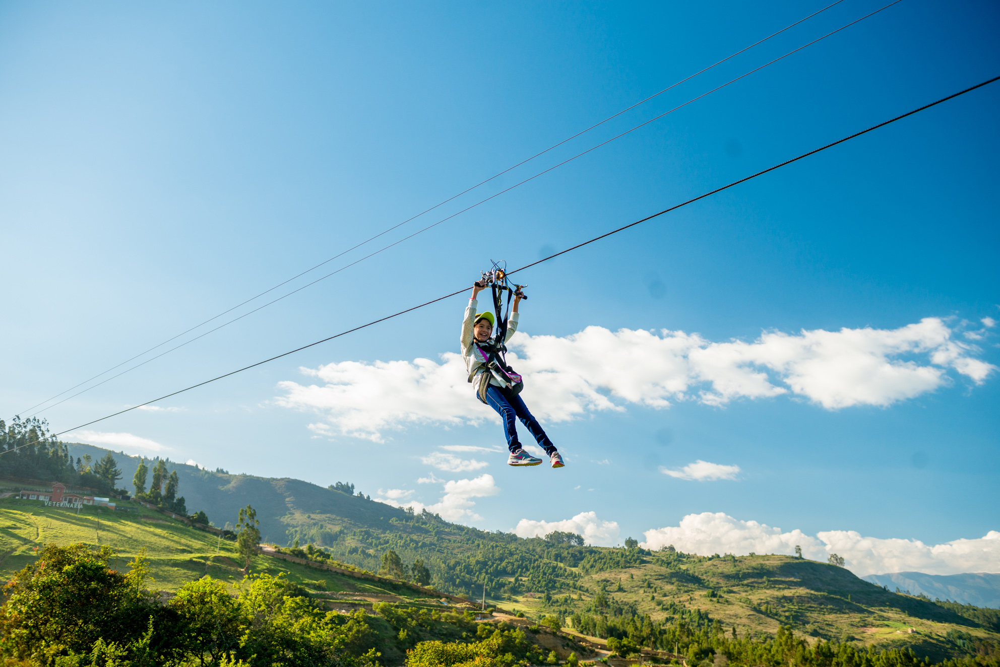

Boyacá tierra de historias
PROVINCIA SUGAMUXI
La provincia de Sugamuxi debe su nombre al cacique Suamox, gran sacerdote de la ciudad sagrada de los Muiscas.
Cuenta con 3.000 kilómetros cuadrados y 13 municipios, encabezados por la industrial Sogamoso. Los municipios son:
• Sogamoso (La Capital)
• Aquitania
• Cuitiva
• Firavitoba
• Gámeza
• Iza
• Mongua
• Monguí
• Nobsa
• Pesca
• Tibasosa
• Tópaga
• Tota
A continuación mostramos un mapa que muestra la ubicación georgráfica de sogamoso, siendo este su capital.
La provincia Sugamuxi se encuentra ubicada en el oriente del departamento de Boyacá, con 200.041 habitantes, equivalente al 18,20% de la población departamental. Es una de las provincias industriales y comerciales del departamento. Sus actividades socio-económicas se desarrollan en torno a la Troncal Central del Norte, la carretera del Cusiana y otros ejes viales y secundarios.
Seguidamente hablaremos de cada uno de los sitios turísticos que la provincia Sugamuxi tiene para ofrecer.
SOGAMOSO:
Sogamoso es una ciudad colombiana ubicada en el departamento de Boyacá. Situada en el centro-oriente de Colombia, a 213 km de Bogotá, en la región del Alto Chicamocha a 2.569 m de altitud, posee una temperatura cuyo promedio es de 20 ºC.
A continuación te mostraremos algunas de las actividades que se pueden realizar en sogamoso las cuales hacen que sea llamada La Ciudad del Sol y del Acero.
MUSEO ARQUEOLÓGICO "TEMPLO DEL SOL"
El museo arqueológico Suamox fue fundado en 1.942 por el antropólogo Eliécer Silva Celis.
Este museo conserva las piezas arqueológicas más importantes de la cultura Muisca, así como el registro del antiguo cementerio Chibcha, cuyas tumbas presentaron las más importantes demostraciones de la industria desarrollada por nuestros antepasados en materia del arte en hueso animal, en carbón mineral, en hilos en fibras, cestería, armas, utensilios, elementos de guerra, instrumentos sagrados y musicales aspectos del culto fálico, y medicina Muisca.

CENTRO RECREACIONAL COMFABOY
Comfaboy ofrece uno de los mejores complejos recreacionales de la región, el Centro Recreacional y Convenciones Sogamoso. Este centro recreacional ofrece actividades como:
• 2 canchas de futbol cinco
• 1 cancha de futbol siete
• 2 canchas de baloncesto
• 1 cancha de voleibol playa
• 4 canchas de mini tejo
• 3 canchas de tejo
• Parque infantil y Parque biosaludable
• Salones de juegos: rana, ping pong, billar, y billar pool, mesa multijuegos, ajedrez
• Senderos ecológicos, duración recorrido 20 minutos
• Cafetería, Café Express
• Sala de internet
• Restaurante
• Zonas húmedas : piscina , sauna, jacuzzi
• Spa total relajación (cabinas de masajes)
AQUITANIA:
Aquitania es una de las cuatro poblaciones que se encuentra bordeando la Laguna de Tota, de la cual un 72% de su superficie está dentro del área de su municipio.
Las principales actividades económicas son: la agricultura, la ganadería y el turismo. En la agricultura se destacan la producción de cebolla larga y de papa; la pesca de la trucha Arcoiris también es una actividad importante en la región.
Uno de los atractivos más llamativos de Aquitania es el Lago de Tota, Con una superficie cercana a los 55 km² es el lago más grande de Colombia. Además, después del Titicaca es el segundo lago navegable a mayor altitud de América del Sur, al estar ubicado a 3.015.
CUITIVA:
El Municipio de Cuítiva se ubica en el Departamento de Boyacá, se encuentra localizado aproximadamente a 233 kilómetros de la ciudad de Bogotá y a 20 kilómetros de Sogamoso.
Uno de los lugares más visitados por los turístas en Cuítiva es la Reserva Natural Pueblito Antiguo, el cual está a orillas de el Lago de Tota con senderos peatonales, plazoletas y con espacios abiertos de montaña y playa. En la reserva también se encontrará información acerca de la cultura e historia boyacense y compartir con amigos y familiares el paisaje.
FIRAVITOBA:
Firavitoba ace parte del altiplano Cundiboyacense y se encuentra a 77 km. de distancia de Tunja la capital del departamento boyacense.El municipio abarca una extensión territorial de 109.5 km2 con suelos ubicados entre los 2.500 y los 3.400 m. s. n. m., con temperatura promedio de 14º C. y precipitación media anual de 750 mm.
Dentro de los lugares más emblemáticos de Firavitoba se encuentra La Cueva Del Viejo, el cual se dice que dentro de esta Cueva existía un lago en el cual había un tesoro representado en una gallina con sus pollitos; hace más de 160 años, llegó a vivir como ermitaño un viejito junto a su esposa quienes trabajaban los terrenos que se encontraban a su alrededor. Cuentan los mismos habitantes del municipio que este anciano era muy celoso de su territorio y le molestaba que llegaran a irrumpir en su cueva. Por esta razón cuando alguien se acercaba a la cueva del viejo caían torrenciales aguaceros, uno de estos formó una gran creciente llevándose el tesoro.
GÁMEZA:
Gameza tiene una superficie de 88 km², limita por el norte con los municipios de Tasco y Corrales, con Socotá por el oriente, por el occidente con Tópaga y Corrales, y por el sur con Tópaga y Mongua. Por su extremo occidental contacta con río Chicamocha.
En Gameza uno de los lugares más concurridos es el Zoológico de Piedras, el cual, son piedras pintadas con la forma de diversos animales.

IZA:
El municipio de Iza se caracteriza por la conservación de su contenido histórico, el cual se manifiesta en su ancestro prehispánico, arte rupestre, mitos, leyendas, tradiciones, la toponimia local, festejos y oficios como el tejido en algodón y lana, utilizando prácticas y telares de la España medieval, así como en su arquitectura colonial, aspectos que le significaron su declaratoria como Bien de Interés Cultural de Carácter Nacional.
Dentro de los lugares más concurridos por los turistas en Iza se encuentran: Los Petroglifos, La piedra del diablo y la piedra del cacique, los cuales han llamado la atención al ser catalogados como el arte rupestre en Iza.
MONGUA:
Mongua se encuentra a 55 kilómetros de Tunja, Mongua, cuyo nombre en lengua chibcha recuerda lo que abunda en su territorio: ‘aguas cristalinas’ y ‘salida del sol’.
Uno de los sitios más turístisos de Mongua es El Sendero de La Laguna Negra, Es un sendero donde se aprecia y se conserva el medio ambiente, un desarrollo turístico como herramienta se sensibilización de los visitantes y turistas hacia la naturaleza, utilizando la educación ambiental, la remembranza histórica y los recursos existentes, conservando el medio ambiente y mejoramiento del entorno de vida.
MONGUÍ:
Monguí ha sido resaltado como el pueblo más lindo de Boyacá y de Colombia, pequeño Escorial suramericano.
El Puente de Calicanto fue una obra de ingeniería construida en el siglo XVII es reflejo de la época de la Colonia en el centro de Colombia y sirvió para que por ella se transportaran las piedras con las que fue erigida la Basílica de Nuestra Señora de Monguí.
NOBSA:
En el plano económico, Nobsa se destaca como un importante centro artesanal de Boyacá, destacada principalmente por sus trabajos en lana. También se destaca la actividad industrial, por el sector cementero y minero que opera en este municipio.
En Nobsa se encuentra El Museo Siderúrgico de Colombia, podemos conocer como se lleva a cabo la producción del acero y el cemento, la diversidad de productos terminados a partir de éstos y la historia de la siderúrgica en Colombia
PESCA:
La economía del municipio se basa en la agricultura y la ganadería. Entre los productos agrícolas se destacan la papa, la cebolla cabezona, el trigo, el maíz, las arvejas, los frijoles, las ibias, así como diversas hortalizas.
La Laguna Siscasí Se encuentra a 60 minutos del casco urbano en carro.Está rodeada de frailejones y vegetación propia del lugar,en este lugar se puede apreciar de la naturaleza y de la tranquilidad que esta ofrece.
TIBASOSA:
En el plano económico, se destaca como uno de los principales productores de la feijoa a nivel nacional, así como de sus derivados.
Uno de los lugares más populares entre los visitantes en Tibasosa es El parque zoológico Guátika el cual cuenta con una gran variedad de atracciones para todos los gustos.
 
TÓPAGA:
El municipio de tiene una extensión de 37 km², se encuentra ubicado sobre la cordillera Oriental de los Andes colombianos; cuenta con piso térmico frío y es surcado por los ríos Chicamocha, Gámeza, y Monguí.La economía del municipio la define la minería ya que es un municipio rico en carbón mineral el cual es explotado y comercializado a diferentes empresas como siderúrgicas o empresas productoras de energía. De otro lado también se destaca la agricultura con producción de maíz, arveja, frijol, papa, trigo, fresa y cebolla.
TOTA:
Tota es un municipio colombiano ubicado en la provincia de Sugamuxi en el departamento de Boyacá. Está situado a unos 40 km de la ciudad de Sogamoso y comparte la laguna de Tota con los municipios de Cuítiva y Aquitania. Es el municipio más antiguo de Boyacá según su año de fundación.

TOURBOYACÁ
Sitio Web dedicado a todo aquel que quiera aprender más acerca de nuestro departamento,
especialmente, las provincias Tundama y Sugamuxi
Copyright (c) 2019
Todos los derechos reservados
¡SÍGUENOS EN NUESTRAS REDES SOCIALES!